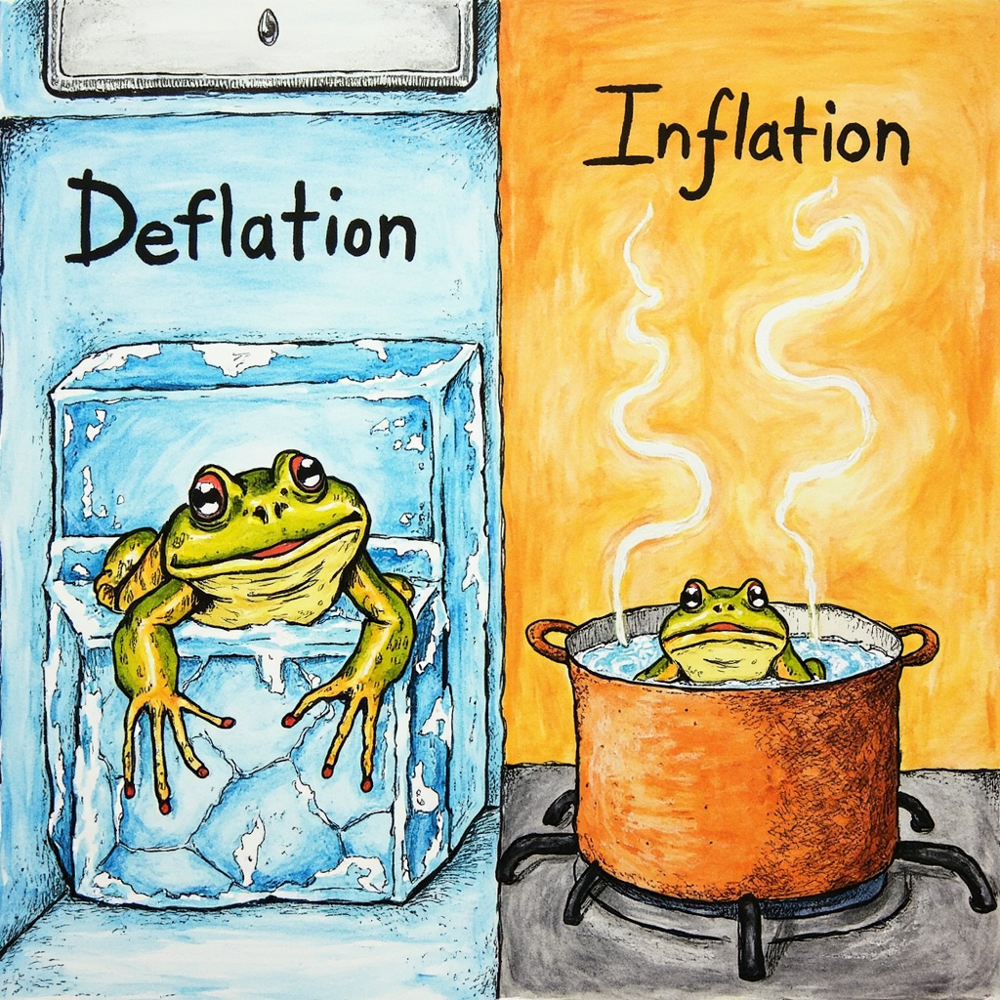
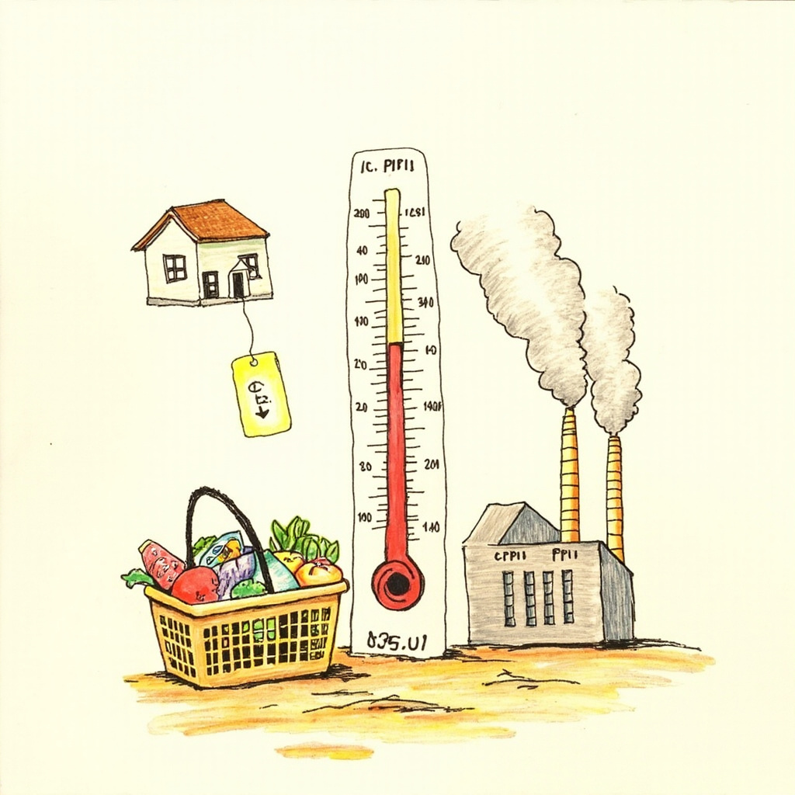
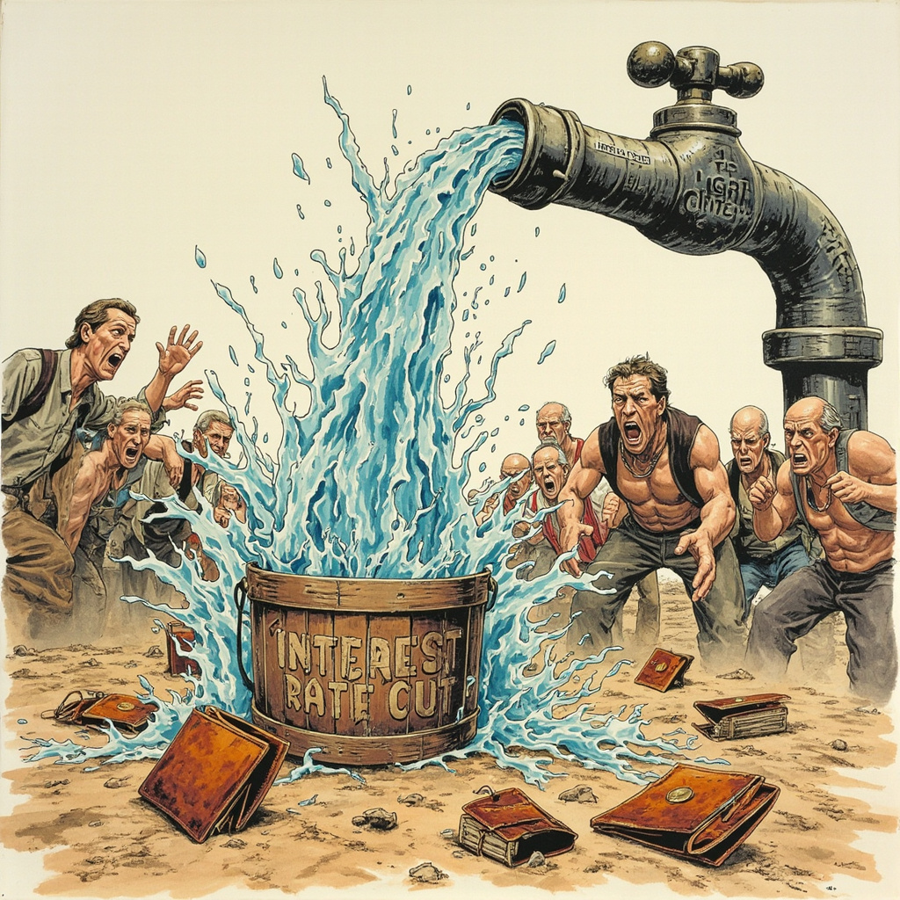

最近逛超市，我发现猪肉从30块一斤跌到了15块。作为一个爱吃红烧肉的码农，第一反应是：爽！月薪1万，现在能买666斤猪肉了。但冷静一想——猪肉为什么跌？是不是大家都不花钱了？我翻开了金融补课本，结果发现了一个比通胀更可怕的词：通货紧缩。

通货紧缩，简单说就是物价持续下跌。听起来挺美？但背后的逻辑很残酷：大家不敢花钱 → 东西卖不出去 → 降价求生 → 工厂倒闭 → 工人失业 → 更不敢花钱。这叫死亡螺旋。
通胀是温水煮青蛙，你兜里的钱悄悄变毛；通缩是冰箱冻青蛙，钱更值钱了但你连工作都没了。1929年大萧条、日本失去三十年，背后都是这只冰箱在作怪。

两个判断温度的数字：CPI 和 PPI
CPI是消费者物价指数，统计局每月拎篮子去超市买600多种东西比价——猪肉、白菜、房租、理发。但它有个致命缺陷：不算房价！你家房子从300万跌到200万，CPI说「物价稳定」，因为它只看房租不看房价。CPI是滞后指标，告诉你已经发生了什么。
PPI是生产者物价指数，看工厂造东西的成本。它是个先行指标——工厂先涨价，过几个月超市才跟。但PPI涨了CPI不一定涨，工厂可能自己扛着亏损，扛不住了才转嫁给你。

降息了为啥还通缩？——钱在空转
按上节课学的，降息应该是把钱从银行赶出来推高通胀。但现在降息了物价反而在跌——因为央行把水龙头拧大了，但没人拿桶来接。
银行有钱放贷，但企业不敢借（订单少）、老百姓不敢借（怕失业还不起）、你不敢借（房价在跌）。钱在金融系统空转，一滴都流不到菜市场。物价下跌不是发福利，是商家在降价求生。
假如你是一个小老板：月营业额10万、成本8万。通缩来了没人消费，打8折后营收变8万——不赚不赔甚至亏损，只能裁员。员工失业后更不敢花钱。你房贷不变、薪资可能冻涨甚至被裁——这就是恶性循环。

通胀偷走你的购买力，通缩偷走你的收入。不要看到打折就上头，先问问自己：明天还有没有工作？